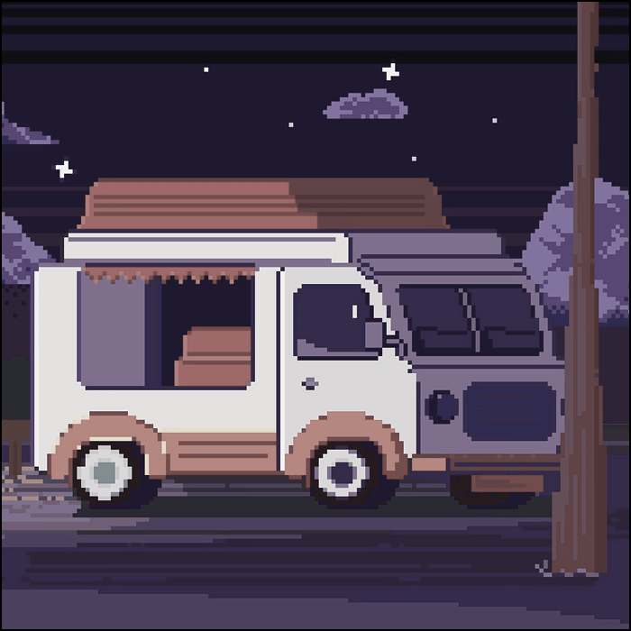
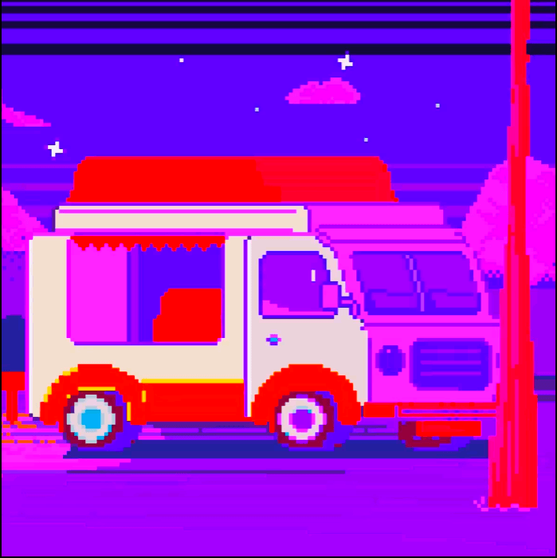

Фритрек и нулевой спринт: Подготовка к работе
 </HTML>
</HTML>
1 спринт: Я — чистый лист

</HTML>1 спринт: А если не получится?

<CSS>2 спринт: Погоня за идеалом
 <desigions>
<desigions>
2 спринт: О тех, кто рядом
 care
care
3 спринт: Обходные стратегии
 <support>
<support>
3 спринт: Когда опускаются руки
 <lifes-style: none;>
<lifes-style: none;>
«Сейчас я здесь»
 <experience>
<experience>